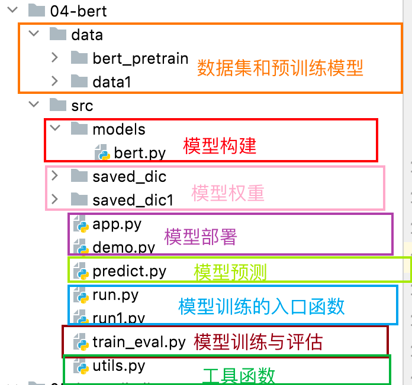
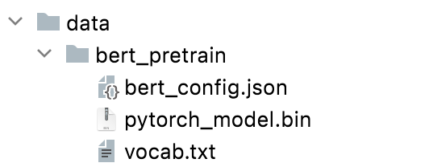

BERT模型的实现¶
学习目标：
1.能够构建Bert案例的代码结构
2.能够完成数据集的读取
3.能够完成Bert分类模型的构建
4.能够完成Bert模型的训练与测试
1.代码架构¶
代码架构如下所示：

2.数据处理¶
2.1 项目数据集¶
数据集的路径: toutiao/data/data/
项目的数据集包括4个文件, 包含训练集，测试集、验证集数据以及相应的类别信息，与前面介绍的一样。
2.2 预训练模型相关数据¶
预训练模型相关数据的文件夹路径为data/bert_pretrain/中，预训练模型相关数据共包含3个文件:

1、BERT模型的超参数配置文件
04-bert/data/bert_pretrain/bert_config.json
{
"attention_probs_dropout_prob": 0.1, // 注意力机制的丢弃概率
"directionality": "bidi", // 模型的方向性，这里是双向
"hidden_act": "gelu", // 隐藏层的激活函数，这里是GELU
"hidden_dropout_prob": 0.1, // 隐藏层中的丢弃概率
"hidden_size": 768, // 隐藏层的神经元个数，对应H
"initializer_range": 0.02, // 权重初始化时截断正态分布的标准差的大小
"intermediate_size": 3072, // encoder中间隐层神经元个数，对应4H
"max_position_embeddings": 512, // 最大的位置编码
"num_attention_heads": 12, // 多头注意力头的数量，对应A
"num_hidden_layers": 12, // ecoder的重复个数，对应L
"pooler_fc_size": 768, // 池化层的全连接层的维度
"pooler_num_attention_heads": 12, // 池化层的注意力头的数量
"pooler_num_fc_layers": 3, // 池化层的全连接层的数量
"pooler_size_per_head": 128, // 池化层中每个注意力头的维度
"pooler_type": "first_token_transform", // 池化层的类型，使用第一个标记进行变换
"type_vocab_size": 2, // 类型词汇表的大小
"vocab_size": 21128 // 词汇表的大小
}
2、BERT预训练模型权重文件
04-bert/data/bert_pretrain/pytorch_model.bin
3、BERT预训练模型词典文件
04-bert/data/bert_pretrain/vocab.txt
[PAD]
[unused1]
[unused2]
[unused3]
[unused4]
[unused5]
[unused6]
[unused7]
[unused8]
[unused9]
[unused10]
......
......
......
[unused98]
[unused99]
[UNK]
[CLS]
[SEP]
[MASK]
<S>
<T>
!
......
......
......
3.工具类函数¶
- 工具类函数的路径为
04-bert/src/utils.py
- 所需的工具包如下所示：
import torch
from tqdm import tqdm
import time
from datetime import timedelta
3.1 工具类函数build_dataset()¶
工具类函数build_dataset(), 位于utils.py中的独立函数.该函数的目的是根据配置信息构建用于模型训练的数据集。它通过加载文本文件、分词、添加特殊标记，生成包含词汇索引、标签、序列长度和填充掩码的数据集。最终，函数返回训练集、验证集和测试集，以供模型使用
def build_dataset(config):
"""
根据配置信息构建模型训练所需的数据集。
参数：
- config (object): 配置信息对象，包含有关数据集和模型的相关参数。
返回：
- train, dev, test (tuple): 包含三个元组，分别是训练集、验证集和测试集。
"""
def load_dataset(path, pad_size=32):
"""
加载并处理单个数据集文件。
参数：
- path (str): 数据集文件路径。
- pad_size (int): 填充到的序列长度，默认为32。
返回：
- contents (list): 包含处理后的数据的列表。
"""
contents = [] # 用于存储处理后的数据的列表
with open(path, "r", encoding="UTF-8") as f:
for line in tqdm(f): # 逐行遍历文件内容
lin = line.strip()
if not lin:
continue
content, label = lin.split("\t") # 分割每行的内容和标签
token = config.tokenizer.tokenize(content) # 使用分词器对内容进行分词
token = [CLS] + token # 在分词结果前加入[CLS]标记
seq_len = len(token) # 计算序列长度
mask = [] # 用于存储填充掩码
token_ids = config.tokenizer.convert_tokens_to_ids(token) # 将分词结果转换为词汇索引
if pad_size:
if len(token) < pad_size: # 如果序列长度小于设定的填充长度
mask = [1] * len(token_ids) + [0] * (pad_size - len(token)) # 创建填充掩码
token_ids += [0] * (pad_size - len(token)) # 对词汇索引列表进行填充
else:
mask = [1] * pad_size # 如果序列长度大于等于填充长度，填充掩码为全1
token_ids = token_ids[:pad_size] # 对词汇索引列表进行截断
seq_len = pad_size # 更新序列长度为填充长度
# 将处理后的数据添加到contents列表
contents.append((token_ids, int(label), seq_len, mask))
return contents
# 使用load_dataset函数加载训练集、验证集和测试集
train = load_dataset(config.train_path, config.pad_size)
dev = load_dataset(config.dev_path, config.pad_size)
test = load_dataset(config.test_path, config.pad_size)
# 返回三个元组，分别是训练集、验证集和测试集
return train, dev, test
3.2 工具函数build_iterator()¶
包括数据迭代器的类class DatasetIterater()和工具函数build_iterator()，位于utils.py中的独立函数和类.
DatasetIterater类：__init__：接收批次数据、批次大小、设备类型和模型名称，设置相关属性。_to_tensor函数：将批次数据转换为 PyTorch 的 Tensor 格式。__next__函数：获取下一个批次的样本，处理不规则批次和索引溢出。__iter__函数：返回迭代器对象本身。__len__函数：获取迭代器的长度。build_iterator函数：- 根据配置信息和给定的数据集构建数据集迭代器对象。
- 返回数据集迭代器。
class DatasetIterater(object):
def __init__(self, batches, batch_size, device, model_name):
"""
数据集迭代器的初始化函数。
参数：
- batches (list): 包含样本的列表。
- batch_size (int): 每个批次的大小。
- device (str): 数据加载到的设备（CPU或GPU）。
- model_name (str): 使用的模型名称。
"""
self.batch_size = batch_size # 每个批次的大小
self.batches = batches # 包含样本的列表
self.model_name = model_name # 使用的模型名称
self.n_batches = len(batches) // batch_size # 批次的数量
self.residue = False # 记录batch数量是否为整数
if len(batches) % self.n_batches != 0:
self.residue = True
self.index = 0 # 当前批次的索引
self.device = device # 数据加载到的设备（CPU或GPU）
def _to_tensor(self, datas):
"""
将样本数据转换为Tensor。
"""
x = torch.LongTensor([_[0] for _ in datas]).to(self.device)
y = torch.LongTensor([_[1] for _ in datas]).to(self.device)
# pad前的长度(超过pad_size的设为pad_size)
seq_len = torch.LongTensor([_[2] for _ in datas]).to(self.device)
# 若为BERT模型，返回(x, seq_len, mask), y；
if self.model_name == "bert" :
mask = torch.LongTensor([_[3] for _ in datas]).to(self.device)
return (x, seq_len, mask), y
# 若为TextCNN模型，返回(x, seq_len), y
if self.model_name == "textCNN":
return (x, seq_len), y
def __next__(self):
"""
获取下一个批次的样本。
"""
if self.residue and self.index == self.n_batches:
batches = self.batches[self.index * self.batch_size: len(self.batches)]
self.index += 1
batches = self._to_tensor(batches)
return batches
elif self.index >= self.n_batches:
self.index = 0
raise StopIteration
else:
batches = self.batches[self.index * self.batch_size: (self.index + 1) * self.batch_size]
self.index += 1
batches = self._to_tensor(batches)
return batches
def __iter__(self):
"""
返回迭代器对象本身。
"""
return self
def __len__(self):
"""
获取迭代器的长度。
"""
if self.residue:
return self.n_batches + 1
else:
return self.n_batches
def build_iterator(dataset, config):
"""
根据配置信息构建数据集迭代器。
返回：
- 数据集迭代器对象。
"""
iter = DatasetIterater(dataset, config.batch_size, config.device, config.model_name)
return iter
3.3工具类函数get_time_dif()¶
get_time_dif()函数位于utils.py中的独立函数，该函数接受一个开始时间戳作为参数，计算当前时间与开始时间的差值，并将差值转换为 timedelta 对象表示已使用的时间。这种计算时间差的方法通常用于测量程序运行的时间。
def get_time_dif(start_time):
"""
计算已使用的时间差。
"""
# 获取当前时间
end_time = time.time()
# 计算时间差
time_dif = end_time - start_time
# 将时间差转换为整数秒，并返回时间差对象
return timedelta(seconds=int(round(time_dif))
4.BERT分类模型搭建¶
接下来实现一个基于BERT的文本分类模型，并包含了相关的配置信息。该部分代码在：
04-bert/src/models/bert.py
主要内容包含：
配置类 Config：和模型类 Model：
首先**导入工具包**：
import torch
import torch.nn as nn
import os
from transformers import BertModel, BertTokenizer, BertConfig
4.1 实现Config类代码¶
配置类 Config中主要包含以下内容：
Config类包含了用于模型训练和数据处理的各种参数。- 定义了模型名称、数据集路径、训练集、验证集、测试集文件路径、类别名单等信息。
- 包含模型训练结果和量化模型存储结果的路径。
- 配置了训练设备（GPU或CPU）、类别数、epoch数、mini-batch大小、句子长度等。
- BERT预训练模型的路径、分词器、BERT模型配置、隐藏层大小等。
class Config(object):
def __init__(self):
"""
配置类，包含模型和训练所需的各种参数。
"""
self.model_name = "bert" # 模型名称
self.data_path = "/Users/mac/Desktop/投满分项目/03-code/04-bert/data/data1/" #数据集的根路径
self.train_path = self.data_path + "train.txt" # 训练集
self.dev_path = self.data_path + "dev.txt" # 验证集
self.test_path = self.data_path + "test.txt" # 测试集
self.class_list = [x.strip() for x in open(self.data_path + "class.txt").readlines()] # 类别名单
self.save_path = "/Users/mac/Desktop/投满分项目/03-code/04-bert/src/saved_dic" #模型训练结果保存路径
if not os.path.exists(self.save_path):
os.mkdir(self.save_path)
self.save_path += "/" + self.model_name + ".pt" # 模型训练结果
self.save_path2 = "/Users/mac/Desktop/投满分项目/03-code/04-bert/src/saved_dic1" # 量化模型存储结果路径
if not os.path.exists(self.save_path2):
os.mkdir(self.save_path2)
self.save_path2 += "/" + self.model_name + "_quantized.pt" # 量化模型存储结果
# 模型训练+预测的时候, 放开下一行代码, 在GPU上运行.
self.device = torch.device("cuda" if torch.cuda.is_available() else "cpu") # 训练设备，如果GPU可用，则为cuda，否则为cpu
# 模型量化的时候, 放开下一行代码, 在CPU上运行.
# self.device = 'cpu'
self.num_classes = len(self.class_list) # 类别数
self.num_epochs = 2 # epoch数
self.batch_size = 128 # mini-batch大小
self.pad_size = 32 # 每句话处理成的长度(短填长切)
self.learning_rate = 5e-5 # 学习率
self.bert_path = "/Users/mac/Desktop/投满分项目/03-code/04-bert/data/bert_pretrain" # 预训练BERT模型的路径
self.tokenizer = BertTokenizer.from_pretrained(self.bert_path) # BERT模型的分词器
self.bert_config = BertConfig.from_pretrained(self.bert_path + '/bert_config.json') # BERT模型的配置
self.hidden_size = 768 # BERT模型的隐藏层大小
4.2 实现Model类代码¶
**模型类 Model**主要实现以下内容：
Model类继承自nn.Module，实现了一个基于BERT的文本分类模型。- 在初始化方法中，加载预训练的BERT模型和配置，并定义了一个全连接层用于文本分类。
- 在前向传播方法中，通过BERT模型获取句子的表示，然后通过全连接层进行分类
class Model(nn.Module):
def __init__(self, config):
super(Model, self).__init__()
# 预训练BERT模型
self.bert = BertModel.from_pretrained(config.bert_path, config=config.bert_config)
# 全连接层，用于文本分类
self.fc = nn.Linear(config.hidden_size, config.num_classes)
def forward(self, x):
# x: 模型输入，包含句子、句子长度和填充掩码。
context = x[0] # 输入的句子
mask = x[2] # 对padding部分进行mask，和句子一个size，padding部分用0表示，如：[1, 1, 1, 1, 0, 0]
# _是占位符，接收模型的所有输出，而 pooled 是池化的结果,将整个句子的信息压缩成一个固定长度的向量
_, pooled = self.bert(context, attention_mask=mask, return_dict=False)
# 模型输出，用于文本分类
out = self.fc(pooled)
return out
bert.py文件提供了一个简单而灵活的BERT文本分类模型，通过配置类可以方便地调整模型参数，适应不同的文本分类任务，通过model类构建整个网络结构。
5.编写训练函数,测试函数,评估函数¶
这3个函数共同编写在一个代码文件中:
04-bert/src/train_eval.py
首先导入相关工具包，如下所示：
import numpy as np
import torch
import torch.nn as nn
import torch.nn.functional as F
from sklearn import metrics
import time
from utils import get_time_dif
from transformers.optimization import AdamW
from tqdm import tqdm
import math
import logging
5.1 编写训练函数.¶
训练函数实现了模型的训练过程，使用了交叉熵损失函数和AdamW优化器。具体包括以下内容：
- 优化器设置： 使用AdamW优化器，并设置了参数的权重衰减。
- 训练循环： 遍历每个epoch和每个batch，进行前向传播、计算损失、反向传播、参数更新。
- 评估： 每100个batch输出在训练集和验证集上的效果，包括训练损失、训练准确率、验证损失、验证准确率等。
- 保存模型： 若验证集上的损失更低，保存当前模型的参数。
- 时间计算： 计算训练的总时间。
具体实现如下所示：
def loss_fn(outputs, labels):
"""
定义损失函数，使用交叉熵损失。
"""
return nn.CrossEntropyLoss()(outputs, labels)
def train(config, model, train_iter, dev_iter):
"""
模型训练函数。
参数：
- config: 配置信息对象。
- model: 待训练的模型。
- train_iter: 训练集的迭代器。
- dev_iter: 验证集的迭代器。
"""
# 记录开始训练的时间
start_time = time.time()
# 参数优化器设置
param_optimizer = list(model.named_parameters())
no_decay = ["bias", "LayerNorm.bias", "LayerNorm.weight"]
optimizer_grouped_parameters = [
{"params": [p for n, p in param_optimizer if not any(nd in n for nd in no_decay)],
"weight_decay": 0.01
},
{"params": [p for n, p in param_optimizer if any(nd in n for nd in no_decay)],
"weight_decay": 0.0
}]
# 设置优化器
optimizer = AdamW(optimizer_grouped_parameters, lr=config.learning_rate)
dev_best_loss = float("inf")
# 将模型设置为训练模型师
model.train()
# 遍历每个轮次
for epoch in range(config.num_epochs):
total_batch = 0
print("Epoch [{}/{}]".format(epoch + 1, config.num_epochs))
# 遍历每个批次
for i, (trains, labels) in enumerate(tqdm(train_iter)):
# 模型前向传播
outputs = model(trains)
# 梯度清零
model.zero_grad()
# 计算损失
loss = loss_fn(outputs, labels)
# 反向传播
loss.backward()
# 参数更新
optimizer.step()
# 每100个batch输出在训练集和验证集上的效果
if total_batch % 100 == 0 and total_batch != 0:
true = labels.data.cpu()
predic = torch.max(outputs.data, 1)[1].cpu()
train_acc = metrics.accuracy_score(true, predic)
# 评估验证集效果
dev_acc, dev_loss = evaluate(config, model, dev_iter)
# 若验证集损失更低，保存模型参数
if dev_loss < dev_best_loss:
dev_best_loss = dev_loss
torch.save(model.state_dict(), config.save_path)
improve = "*"
else:
improve = ""
# 计算时间差
time_dif = get_time_dif(start_time)
# 输出训练和验证集上的效果
msg = "Iter: {0:>6}, Train Loss: {1:>5.2}, Train Acc: {2:>6.2%}, Val Loss: {3:>5.2}, Val Acc: {4:>6.2%}, Time: {5} {6}"
print(msg.format(total_batch, loss.item(), train_acc, dev_loss, dev_acc, time_dif, improve))
# 评估完成后将模型置于训练模式, 更新参数
model.train()
# 每个batch结束后累加计数
total_batch += 1
5.2 编写验证函数.¶
模型验证函数 evaluate，用于在验证集或测试集上评估模型的性能。主要功能包括：
- 损失计算： 通过循环遍历数据集，计算模型在每个样本上的损失，并累加得到总损失。
- 预测结果记录： 记录模型对每个样本的预测结果和真实标签。
- 准确率计算： 根据记录的预测结果和真实标签计算模型的准确率。
- 测试集评估： 如果是测试集评估，额外计算分类报告和混淆矩阵。
该函数的目的是提供一种简便的方式，以便在训练过程中监控模型的性能，并在需要时保存性能较好的模型参数。
def evaluate(config, model, data_iter, test=False):
"""
模型评估函数。
参数：
- config: 配置信息对象。
- model: 待评估的模型。
- data_iter: 数据迭代器。
- test: 是否为测试集评估。
"""
# 采用量化模型进行推理时需要关闭
# model.eval()
loss_total = 0
# 预测结果
predict_all = np.array([], dtype=int)
# label信息
labels_all = np.array([], dtype=int)
# 不进行梯度计算
with torch.no_grad():
# 遍历数据集
for texts, labels in data_iter:
# 将数据送入网络中
outputs = model(texts)
# 损失函数
loss = F.cross_entropy(outputs, labels)
# 损失和
loss_total += loss
# 获取label信息
labels = labels.data.cpu().numpy()
# 获取预测结果
predic = torch.max(outputs.data, 1)[1].cpu().numpy()
labels_all = np.append(labels_all, labels)
predict_all = np.append(predict_all, predic)
# 计算准确率
acc = metrics.accuracy_score(labels_all, predict_all)
if test:
# 如果是测试集评估，计算分类报告和混淆矩阵
report = metrics.classification_report(labels_all, predict_all, target_names=config.class_list, digits=4)
confusion = metrics.confusion_matrix(labels_all, predict_all)
return acc, loss_total / len(data_iter), report, confusion
else:
# 如果是验证集评估，仅返回准确率和平均损失
return acc, loss_total / len(data_iter)
5.3 编写测试函数¶
测试test 函数用于在测试集上进行最终的模型测试。它调用了之前定义的 evaluate 函数，然后输出测试集上的损失、准确率、分类报告和混淆矩阵等信息。
def test(config, model, test_iter):
"""
模型测试函数，用于在测试集上进行最终的模型测试。
参数：
- config: 配置信息对象。
- model: 待测试的模型。
- test_iter: 测试集的数据迭代器。
"""
# 采用量化模型进行推理时需要关闭
# model.eval()
start_time = time.time()
# 调用验证函数计算评估指标
test_acc, test_loss, test_report, test_confusion = evaluate(config, model, test_iter, test=True)
# 打印测试结果信息:输出测试集上的损失、准确率、分类报告和混淆矩阵等信息
msg = "Test Loss: {0:>5.2}, Test Acc: {1:>6.2%}"
print(msg.format(test_loss, test_acc))
print("Precision, Recall and F1-Score...")
print(test_report)
print("Confusion Matrix...")
print(test_confusion)
time_dif = get_time_dif(start_time)
print("Time usage:", time_dif)
6 编写训练评估主函数¶
我们实现一个简单的入口脚本，用于指定模型类型，然后加载对应模型的配置和模型定义，构建数据集和数据迭代器，最后进行模型的训练和测试。
该代码在：
04-bert/src/run.py
6.1 具体实现¶
代码实现如下所示：
import time
import torch
import numpy as np
from train_eval import train, test
from importlib import import_module
import argparse
from utils import build_dataset, build_iterator, get_time_dif
# 命令行参数解析
parser = argparse.ArgumentParser(description="Chinese Text Classification")
parser.add_argument("--model", type=str, default='bert', help="choose a model: bert")
args = parser.parse_args()
if __name__ == "__main__":
if args.model == "bert":
# 导入对应模型的配置和模型定义
model_name = "bert"
x = import_module("models." + model_name)
config = x.Config()
# 设置随机种子，保证实验的可重复性
np.random.seed(1)
torch.manual_seed(1)
torch.cuda.manual_seed_all(1)
torch.backends.cudnn.deterministic = True # 保证每次结果一样
# 构建训练、验证、测试数据集和数据迭代器
train_data, dev_data, test_data = build_dataset(config)
train_iter = build_iterator(train_data, config)
dev_iter = build_iterator(dev_data, config)
test_iter = build_iterator(test_data, config)
# 创建模型实例并移至指定设备
model = x.Model(config).to(config.device)
# 训练模型
train(config, model, train_iter, dev_iter)
# 在测试集上测试模型性能
test(config, model, test_iter)
6.1 输出结果¶
执行上述函数，运行结果如下：
Loading data for Bert Model...
180000it [00:37, 4820.80it/s]
10000it [00:02, 4954.00it/s]
10000it [00:02, 4952.50it/s]
Epoch [1/3]
14%|█████████▉ | 200/1407 [02:06<13:26, 1.50it/s]Iter: 200, Train Loss: 0.3, Train Acc: 91.41%, Val Loss: 0.29, Val Acc: 90.86%, Time: 0:02:26 *
28%|███████████████████▉ | 400/1407 [04:44<11:46, 1.43it/s]Iter: 400, Train Loss: 0.34, Train Acc: 90.62%, Val Loss: 0.26, Val Acc: 92.10%, Time: 0:05:07 *
43%|█████████████████████████████▊ | 600/1407 [07:26<09:25, 1.43it/s]Iter: 600, Train Loss: 0.29, Train Acc: 91.41%, Val Loss: 0.25, Val Acc: 92.10%, Time: 0:07:49 *
57%|███████████████████████████████████████▊ | 800/1407 [10:08<07:06, 1.42it/s]Iter: 800, Train Loss: 0.15, Train Acc: 94.53%, Val Loss: 0.22, Val Acc: 92.85%, Time: 0:10:31 *
71%|█████████████████████████████████████████████████ | 1000/1407 [12:50<04:43, 1.44it/s]Iter: 1000, Train Loss: 0.17, Train Acc: 94.53%, Val Loss: 0.22, Val Acc: 93.00%, Time: 0:13:10
No optimization for a long time, auto-stopping...
Test Loss: 0.2, Test Acc: 93.64%
Precision, Recall and F1-Score...
precision recall f1-score support
finance 0.9246 0.9320 0.9283 1000
realty 0.9484 0.9370 0.9427 1000
stocks 0.8787 0.8980 0.8882 1000
education 0.9511 0.9730 0.9619 1000
science 0.9236 0.8950 0.9091 1000
society 0.9430 0.9270 0.9349 1000
politics 0.9267 0.9100 0.9183 1000
sports 0.9780 0.9780 0.9780 1000
game 0.9514 0.9600 0.9557 1000
entertainment 0.9390 0.9540 0.9464 1000
accuracy 0.9364 10000
macro avg 0.9365 0.9364 0.9364 10000
weighted avg 0.9365 0.9364 0.9364 10000
Confusion Matrix...
[[932 10 37 2 5 5 7 1 1 0]
[ 13 937 11 2 4 10 5 5 5 8]
[ 49 12 898 1 19 1 15 0 2 3]
[ 1 1 0 973 0 8 7 0 1 9]
[ 4 4 28 7 895 10 12 2 27 11]
[ 2 8 4 16 5 927 18 1 5 14]
[ 3 8 34 12 9 19 910 0 0 5]
[ 2 3 2 1 1 1 4 978 1 7]
[ 0 2 4 0 24 1 3 1 960 5]
[ 2 3 4 9 7 1 1 12 7 954]]
Time usage: 0:00:19
71%|█████████████████████████████████████████████████ | 1000/1407 [13:29<05:29, 1.24it/s]
结论: BERT模型在测试集上的表现是Test Acc: 93.64% , 对比于第一章的fasttext模型最好的表现91.93%, 有了1.71%的提升, 可以说是显著性提升了!
并且会保存相应训练权重：
7.模型预测¶
接下来使用上一部分训练好的模型权重进行预测，实现了一个推理过程，该部分代码在：
04-bert/src/predict.py
首先导入工具包：
import torch
from importlib import import_module
import numpy as np
7.1 推理函数定义¶
推理函数来完成对新样本的预测，接下来定义：
- 定义特殊符号和类别映射： 定义了用于填充的特殊符号（[UNK], [PAD], [CLS]）以及类别ID到类别名的映射。
- 编写推理函数
inference： 定义了一个用于模型推理的函数，该函数接受一个模型、模型配置、待分析的文本，返回模型对文本的预测结果。
具体实现如下所示：
# 定义特殊的符号和类别映射
CLS = "[CLS]"
id_to_name = {0: 'finance', 1: 'realty', 2: 'stocks', 3: 'education', 4: 'science',
5: 'society', 6: 'politics', 7: 'sports', 8: 'game', 9: 'entertainment'}
def inference(model, config, input_text, pad_size=32):
"""
模型推理函数，用于对输入文本进行情感分析的推理。
参数：
- model: 已加载的情感分析模型。
- config: 模型配置信息。
- input_text: 待分析的文本。
- pad_size: 指定文本填充的长度。
"""
# 对输入文本进行分词和预处理
content = config.tokenizer.tokenize(input_text)
content = [CLS] + content
seq_len = len(content)
token_ids = config.tokenizer.convert_tokens_to_ids(content)
# 填充或截断文本至指定长度
if seq_len < pad_size:
mask = [1] * len(token_ids) + [0] * (pad_size - seq_len)
token_ids += [0] * (pad_size - seq_len)
else:
mask = [1] * pad_size
token_ids = token_ids[:pad_size]
seq_len = pad_size
# 将处理后的文本转换为PyTorch Tensor
x = torch.LongTensor(token_ids).to(config.device)
seq_len = torch.LongTensor(seq_len).to(config.device)
mask = torch.LongTensor(mask).to(config.device)
# 增加一维，表示batch_size为1
x = x.unsqueeze(0)
seq_len = seq_len.unsqueeze(0)
mask = mask.unsqueeze(0)
data = (x, seq_len, mask)
# 模型推理
output = model(data)
# 获取模型预测结果id
predict_result = torch.max(output.data, 1)[1]
return predict_result
7.2 主函数定义¶
在主程序中加载了预训练的BERT模型和相关配置，创建了模型实例，并对指定文本进行分析推理。最后输出了模型对文本的预测结果。具体实现如下：
if __name__ == '__main__':
# 加载BERT模型配置和模型
model_name = 'bert'
x = import_module('models.' + model_name)
config = x.Config()
# 设置随机种子，保证实验的可重复性
np.random.seed(1)
torch.manual_seed(1)
torch.cuda.manual_seed_all(1)
torch.backends.cudnn.deterministic = True
# 创建并加载BERT模型
model = x.Model(config).to(config.device)
model.load_state_dict(torch.load(config.save_path, map_location=config.device))
# 待分析的文本
input_text = '日本地震：金吉列关注在日学子系列报道'
# 进行模型推理
res = inference(model, config, input_text)
# 获取类别名
result = id_to_name[res.item()]
print(result)
执行上述代码输出的结果为：
education
8.模型部署¶
将训练好的机器学习模型应用到实际生产环境中，将模型以服务的形式提供，允许其他系统通过 API 调用，实现模型的可复用性。
8.1 服务端代码¶
利用Flask应用搭建一个Web服务，用来接收客户端通过POST请求发送的文本数据，然后使用预训练的BERT模型进行推理，最后返回预测结果。该部分代码在：
04-bert/src/app.py
首先导入相应的工具包：
import torch
from flask import Flask, request
from importlib import import_module
import numpy as np
接下来加载了预训练的BERT情感分析模型和相关配置，并定义推理函数，与之前提到的推理函数相同，用于对输入文本进行分类，与上述模型预测时类似：
# 定义BERT特殊符号和类别映射
CLS = '[CLS]'
id_to_name = {0: 'finance', 1: 'realty', 2: 'stocks', 3: 'education', 4: 'science',
5: 'society', 6: 'politics', 7: 'sports', 8: 'game', 9: 'entertainment'}
# 加载BERT情感分析模型和相关配置
model_name = 'bert'
x = import_module('models.' + model_name)
config = x.Config()
np.random.seed(1)
torch.manual_seed(1)
torch.cuda.manual_seed_all(1)
torch.backends.cudnn.deterministic = True
model = x.Model(config).to(config.device)
model.load_state_dict(torch.load(config.save_path, map_location='cpu'))
# 推理函数，用于对输入文本进行分类分析,与模型预测部分是一样的
def inference(model, config, input_text, pad_size=32):
# 对输入文本进行分词和预处理
content = config.tokenizer.tokenize(input_text)
content = [CLS] + content
seq_len = len(content)
token_ids = config.tokenizer.convert_tokens_to_ids(content)
# 填充或截断文本到指定长度
if seq_len < pad_size:
mask = [1] * len(token_ids) + [0] * (pad_size - seq_len)
token_ids += [0] * (pad_size - seq_len)
else:
mask = [1] * pad_size
token_ids = token_ids[:pad_size]
seq_len = pad_size
# 将处理后的文本转换为Tensor形式
x = torch.LongTensor(token_ids).to(config.device)
seq_len = torch.LongTensor(seq_len).to(config.device)
mask = torch.LongTensor(mask).to(config.device)
# 增加一个维度
x = x.unsqueeze(0)
seq_len = seq_len.unsqueeze(0)
mask = mask.unsqueeze(0)
data = (x, seq_len, mask)
output = model(data)
# 获取预测结果并返回
predict_result = torch.max(output.data, 1)[1]
predict_result = predict_result.item()
predict_result = id_to_name[predict_result]
return predict_result
最后使用Flask创建一个Web应用。并定义一个路由，接收POST请求，从请求中获取用户ID和文本数据，然后调用推理函数获取预测结果，并将结果作为响应返回给客户端。如果该脚本作为主程序运行，则启动Flask应用，具体实现如下所示：
# 创建Flask应用
app = Flask(__name__)
# 定义路由，接收POST请求并进行推理
@app.route('/v1/main_server/', methods=["POST"])
def main_server():
# 从POST请求中获取用户ID和文本数据
uid = request.form['uid']
text = request.form['text']
# 调用推理函数获取预测结果
res = inference(model, config, text)
return res
# 如果脚本作为主程序运行，则启动Flask应用
if __name__ == '__main__':
app.run()
通过这个Web服务，客户端可以通过向服务器发送文本数据的POST请求，获取BERT模型对文本的预测结果，我们执行这个文件，输出结果如下所示：
* Serving Flask app 'app'
* Debug mode: off
WARNING: This is a development server. Do not use it in a production deployment. Use a production WSGI server instead.
* Running on http://127.0.0.1:5000
Press CTRL+C to quit
8.2 客户端代码¶
客户端代码向Flask应用发送HTTP POST请求，传递文本数据，然后获取Flask应用返回的文本类别预测结果，并打印出预测结果和单条样本的处理耗时。该部分代码在：
04-bert/src/demo.py
具体实现如下：
import requests
import time
# 定义请求url和传入的data
url = "http://127.0.0.1:5000/v1/main_server/"
data = {"uid": "AI-12-001", "text": "日本地震：金吉列关注在日学子系列报道"}
start_time = time.time()
# 向服务发送post请求
res = requests.post(url, data=data)
cost_time = time.time() - start_time
# 打印返回的结果
print('文本类别: ', res.text)
print('单条样本耗时: ', cost_time * 1000, 'ms')
执行上述代码，预测结果为：
文本类别: education
单条样本耗时: 181.6861629486084 ms
9.总结¶
-
实现了若干工具函数, 包括数据的获取等内容.
-
实现了基于BERT实现投满分分类的模型, 并完成了训练和测试评估.
- 实现了模型预测和部署的内容